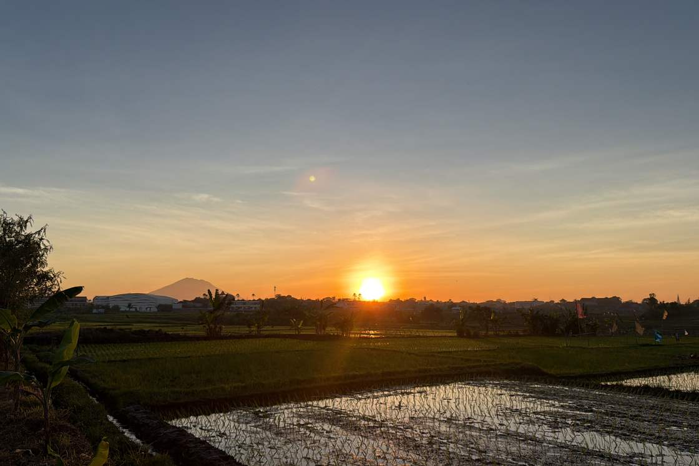
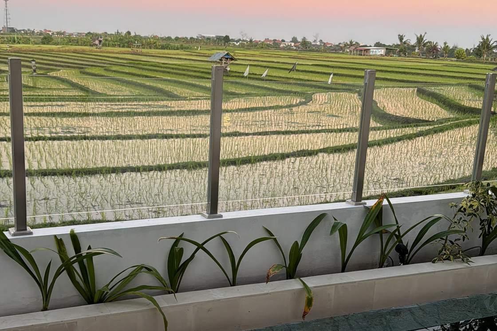
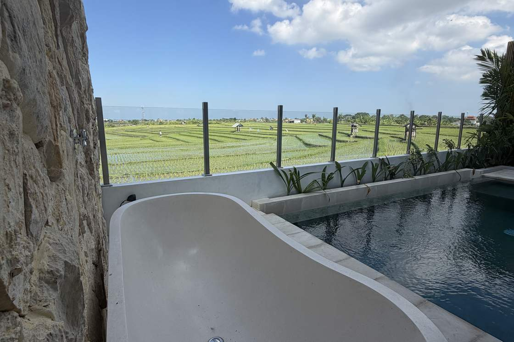
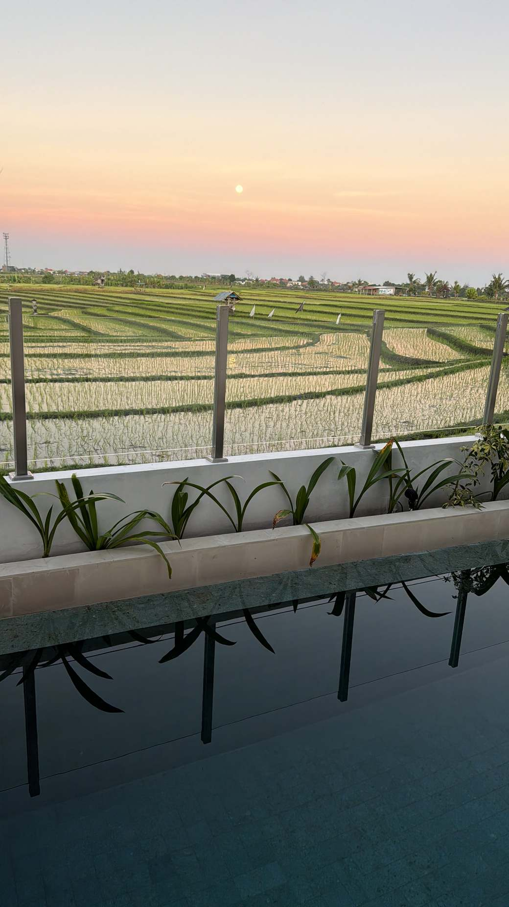
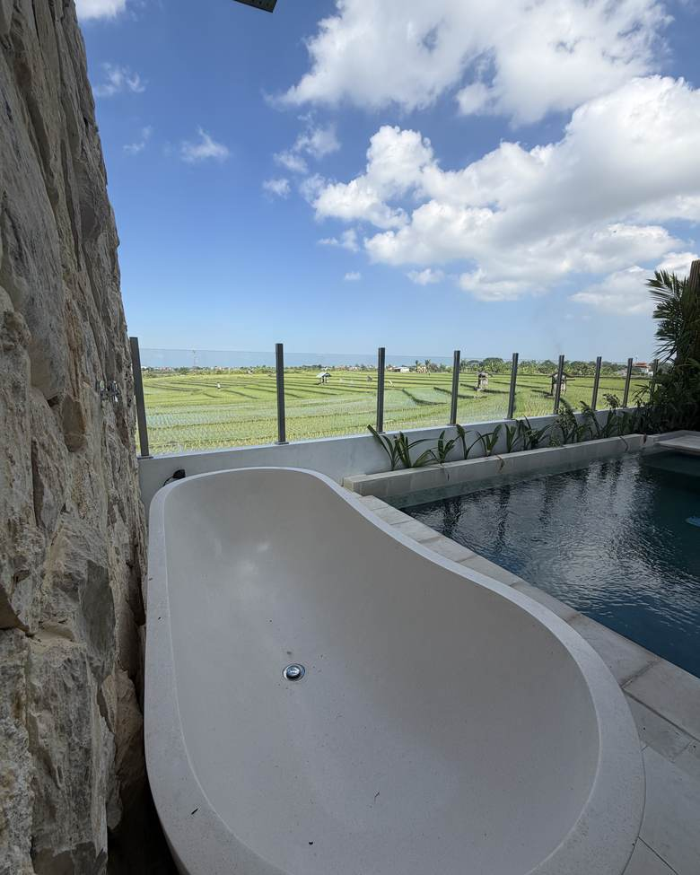

The quiet side of Canggu
Close to the action, away from the noise. Lumina Villa sits on the rice field edge of Canggu. Quiet mornings, 8 minutes to Echo Beach, and none of the construction noise that plagues the centre.
Neighbourhoods
Canggu is not one place.
Most first-time visitors book in the centre and wish they hadn't. Most return visitors look for exactly what Babakan Kubu offers. Here is why the difference matters.

Batu Bolong / Canggu centre
The busy strip. The cafes are good, the bars are lively and there is always something happening. It is also where you will find the most scooter traffic, the most construction noise (which starts early), and the most backpacker energy. Great to visit. Exhausting to sleep in.
Best for: day visits, nightlife. Not ideal for: sleeping in, early mornings, families.

Berawa
Upscale cafes, high-end beach clubs (Finns, Mrs Sippy) and a slightly more polished crowd than central Canggu. It has a good energy in the daytime. It is also busy, developed, and more expensive, with beach club noise that carries further than you might expect.
Best for: beach clubs, brunch, surf beginners. Not ideal for: sleeping in, quiet mornings.

Echo Beach / Pererenan
The most local-feeling part of Canggu. Echo Beach draws experienced surfers. Pererenan has a growing scene of good cafes and smaller guesthouses. Still developing fast: some of the noise and construction issues you see in central Canggu are beginning to arrive here too.
Best for: surfing, local feel. Watch out for: rapid development, some noise.

Babakan Kubu
The rice field edge of Canggu. Working paddies, quiet lanes, the sound of birds and frogs rather than bars and motorbikes. It is a genuinely residential neighbourhood: the kind of Bali that is getting harder to find. Five to eight minutes by scooter to every cafe, surf break and beach club you want. You come home to green and quiet.
Best for: everything. The best Canggu base for a private villa stay.
"Most first-time visitors book in the centre and wish they hadn't. Most return visitors look for exactly what Babakan Kubu offers."
Getting around
Everything is closer than you think.
Canggu is small, scooters are fast, and the roads from Babakan Kubu are easy.
- Echo Beach 8 min
- Berawa cafes + beach clubs 5 min
- Batu Bolong (main strip) 10 min
- Finns Beach Club 6 min
- Tanah Lot temple 20 min
- Seminyak 20 min
- Ubud 60 min
- Ngurah Rai Airport 45 min
All times by scooter, typical conditions. A scooter can be hired for 60,000-80,000 IDR per day and is the standard way to get around Canggu. The concierge can arrange hire from day one.
What is nearby
Ten minutes covers most of what makes Canggu worth visiting.
Eating + drinking
Canggu has more good cafes per square kilometre than almost anywhere in Southeast Asia. Machinery Cafe and Nude for brunch, Old Man's for a beach sunset and cold Bintang, Nook for rice field views, Warung Dandelion for something quieter. Warungs on every lane for 30,000 IDR nasi goreng. All within 10 minutes.
Surfing
Echo Beach is the main break for experienced surfers: a punchy right-hander over reef. Berawa Beach is slower and more forgiving for beginners and intermediates. Board rental is everywhere (from 80,000 IDR per day) and surf schools run daily lessons. The concierge can arrange a private instructor.

Yoga + wellness
The Practice is Canggu's most well-known studio, with multiple classes daily across yoga, breathwork and meditation. Samadi Market runs every Sunday alongside its yoga centre. Desa Seni offers classes in a genuinely extraordinary setting. All within 15 minutes.
Nightlife
The bars and beach clubs are all there when you want them: La Brisa for sundowners, Finns for a full night, Shelter for a local bar feel. The important thing: Babakan Kubu's location means the noise stays there. You enjoy the night out and come home to quiet. The villa is not in earshot of any venue.
Day trips
Tanah Lot is 20 minutes: go at sunset. Ubud is an hour with Tegallalang rice terraces, the Sacred Monkey Forest and a very different Bali pace. Uluwatu takes about 40 minutes and has the best clifftop temple in Bali plus serious surf. All transfers arranged through the concierge.
Markets + shopping
Love Anchor is the anchor of Canggu shopping: independent fashion, swimwear, homewares and jewellery on a single stretch of road. The Samadi Sunday market runs every week with organic produce, local food vendors and crafts. Pererenan morning market is the local option: good for fresh fruit, tempeh and spices if you are using the kitchen.
Comparison
Canggu or Seminyak?
Both are good. They are not the same. The right choice depends on what you are looking for.
Seminyak is for shopping and nightlife. Canggu is for surf, rice fields and a slower pace. Babakan Kubu gives you Canggu without the construction noise that now affects much of the area. If a private villa stay is what you are planning, Canggu wins, and Babakan Kubu is the best place in Canggu to base it.
Questions
What people ask about the location
Yes, significantly. Canggu covers a wide area with very distinct neighbourhoods that feel nothing like each other. The centre of Canggu around Batu Bolong has the energy, the cafes and the surf culture you came for. It also has heavy traffic, ongoing construction that starts at 7am, and bar noise that carries late into the night.
Babakan Kubu is 5-10 minutes from all of that by scooter, and it is a completely different experience. Working rice paddies on both sides of the lane, almost no through traffic, the sound of frogs and birds rather than generators and bars. You still have access to everything Canggu offers, but you come home to quiet.
Most guests who have stayed in central Canggu before say the difference is immediately obvious. The rice field edge is where Canggu still feels like Bali.
The areas that cause the most complaints among returning visitors are those with active construction. Bali is developing fast, and the difference between a street with construction work and a quiet one is enormous: excavators start at 7am and run all day. Check any property's immediate surroundings carefully before booking.
The very centre of Kuta and the busiest parts of Legian are also worth avoiding unless nightlife is your primary reason for visiting. Traffic-locked streets and bar noise make sleeping difficult.
Babakan Kubu has none of these issues. There is no active construction on the lane, no bar noise, no commuter traffic. The road serves the rice fields and the small number of residential properties on it: that is all.
Canggu is one of the best areas in Bali for families, especially the quieter residential neighbourhoods like Babakan Kubu. The reasons are practical: very little through traffic on the lanes, no bar or club noise, a slower pace than Kuta or Seminyak, and a good mix of family-friendly cafes, markets and beach access nearby.
A private villa is also significantly better for families than a hotel. Children can use the pool whenever they like, you can prepare meals at home, everyone has their own bedroom and bathroom, and you are not constrained by hotel breakfast times or restaurant bookings. The concierge can arrange a babysitter if you want an evening out.
Berawa Beach and the shallow end of Echo Beach are both suitable for children, and the drive to Tanah Lot for sunset is easy with a private driver.
They are genuinely different places suited to different trips. Seminyak is more polished: better fashion shopping, higher-end restaurants, a more manicured beach scene. If boutique shopping and upscale nightlife are the priority, Seminyak does it better.
Canggu has something Seminyak has largely lost: the feeling of Bali still being Bali. Rice fields, local warungs, surf culture, organic markets, a mix of long-term expats and travellers who are not in a rush. The pace is slower. The scenery is better. The accommodation, particularly a private villa on the rice field edge, is a completely different experience to a Seminyak hotel.
For a group trip, a family holiday, a surf and yoga trip, or anyone who has been to Bali before and wants something quieter and more local: Canggu, specifically Babakan Kubu, is the better choice.
Jl. Babakan Kubu, Canggu, Bali
Open in Google MapsFind us
How to find us
The villa is on Jl. Babakan Kubu, on the northern rice field edge of Canggu. It is a quiet residential lane: you will need the address, not a landmark. We recommend arriving by private transfer rather than rideshare for the first visit.
Complimentary airport pickup is included with every booking. Your driver will have the exact address and bring you directly to the villa. Share your flight details with the concierge and we will handle the rest.
The location is only part of it.
See the villa and the pool, then check availability direct. No platform fees. We reply fast, 24/7.